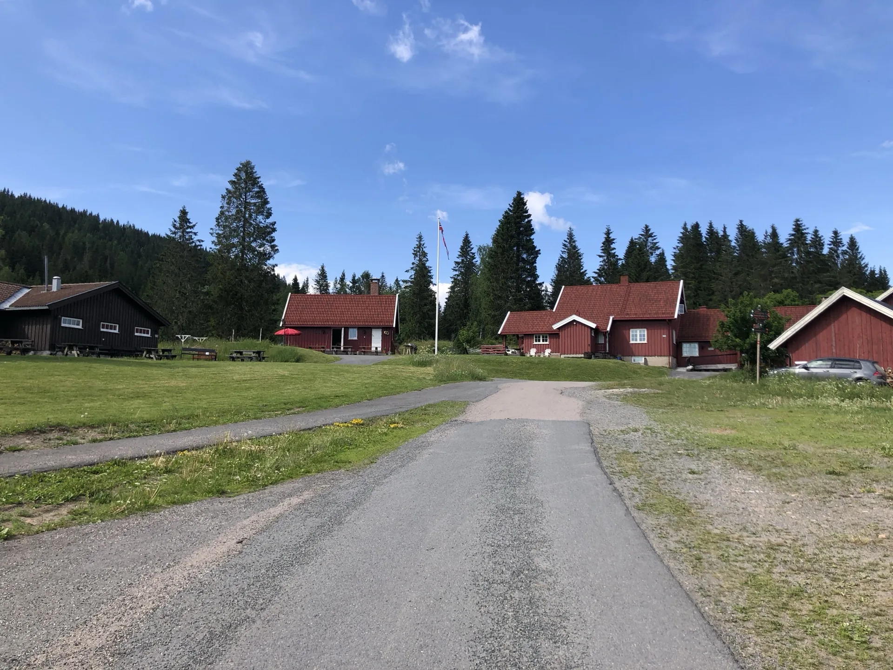
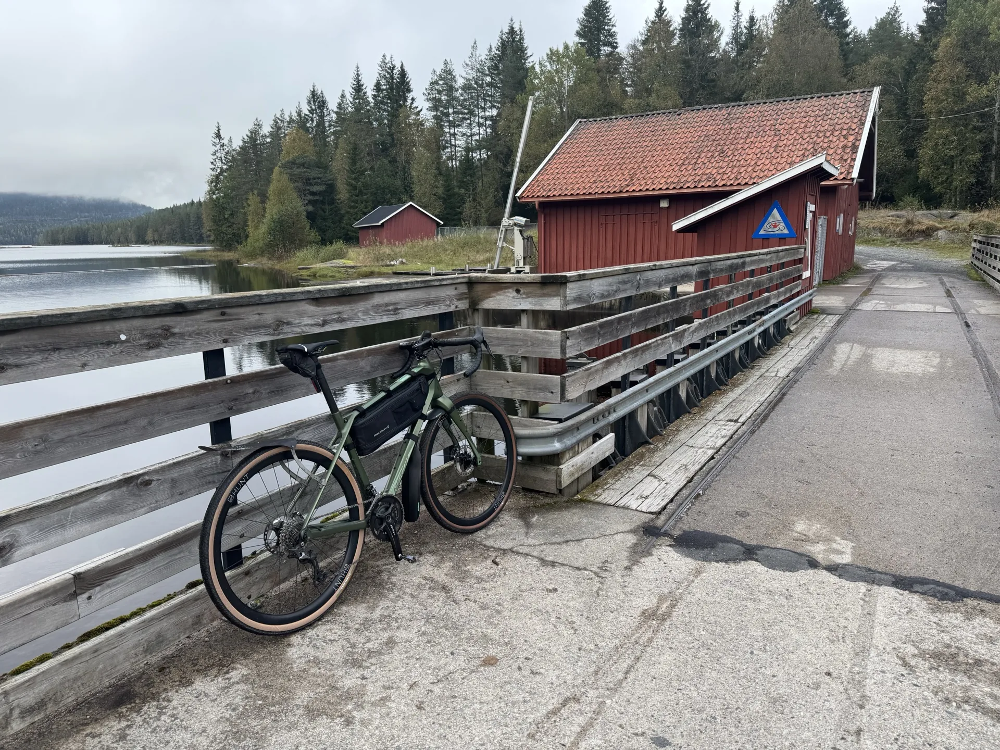

Most people who rent a bike from us decide about two days before they ride. Some decide that morning. Oslo suits that kind of planning better than almost any capital in Europe, because the two things worth seeing here sit at the ends of public transport lines rather than three hours away by car. The fjord is twenty minutes from the centre. The forest is twenty minutes the other way.
So if you have a day free and no plan for it, the question is not really where to go. It is how much effort you feel like spending. Here are three answers.
Two hours, flat, beside the water
Ride west to the Bygdøy peninsula. It is the easy option and it is not a consolation prize: you get the harbour promenade, the beaches at Huk, wooden boathouses, and the museum cluster that holds the Fram polar ship and the Kon-Tiki raft. The ground is almost flat apart from one short climb, the surface is paved throughout, and you are never far from somewhere selling coffee.

Counting stops, this fills a morning or an afternoon rather than a whole day. That makes it the right choice if you have a dinner reservation, a flight, or a travelling companion who has agreed to one hour of cycling and no more. It is also the ride to pick in strong wind, because the alternative involves a long exposed climb.
Pick up at Oslo Central Station and you can be rolling west along the harbour within a few minutes of collecting the bike.
Half a day, on the forest edge
This is the ride most visitors do not know is available, and the one that tends to surprise them. Take the metro to Sognsvann or the tram to Kjelsås, and the city stops within a few hundred metres of the platform. Gravel roads begin almost immediately. Within half an hour of leaving your hotel you can be riding between pines with no traffic and no buildings.
From Kjelsås the natural direction is north into Maridalen, a broad farming valley running along a lake, past old farms and the ruins of a medieval church. From Sognsvann you climb more immediately into the trees. Either gives you three to four hours and somewhere between 25 and 35 kilometres, depending on how far in you push before turning round.
The honest advantage of this option over the fjord is silence. Bygdøy is busy in summer. Twenty minutes into the Nordmarka on a weekday you will pass almost nobody.
The whole day, properly
If you want the ride people remember, take the big forest loop that Oslo cyclists call Ring 4. It runs somewhere between 50 and 55 kilometres depending on the connectors you take, with around 1 000 metres of climbing on forest gravel almost the entire way. Allow four to five hours at a relaxed pace with a stop.

Nothing on it is steep. The difficulty is that the climbing is spread so thinly you never notice you are doing it, which is why riders who look at the elevation figure and shrug can still arrive at the far end tired. There are cabins along the way serving coffee and waffles, Kikutstua around halfway and Finnerud also on the route, and the loop passes a string of lakes that are worth stopping at even when you are behind schedule.
You can download the GPX and put it on a phone or bike computer before you set off, which removes the one genuine obstacle to riding it unguided.
Download the Ring 4 GPX (from Kjelsås)
If the forecast is bad
Rain changes less here than people expect. Nordmarka gravel drains quickly and stays firm when wet, so the surface holds up on days when a trail network elsewhere would turn to mud. The forest also shelters you from wind in a way the fjord path does not.

What does change is braking. Wet rotors need a longer distance to stop, and that matters more on the standard gravel bikes, which run mechanical disc brakes rather than hydraulic ones. Test the brakes before you set off, leave more room on the descents, and the rest of the day looks after itself. Bring a light waterproof shell and accept wet feet.
How quickly you can actually start
The part that makes a same-week plan workable is the handover. Bikes wait locked at the pickup point and we send you the code, so nobody has to be standing in a shop when you arrive. Collection runs from 10:00 and return until 20:00, seven days a week including weekends, and other times can usually be arranged if you say so when booking.
There are four pickup points, all included in the price: Sognsvann at the end of metro line 5, Kjelsås at the end of tram lines 12 and 15, Huseby two minutes from Montebello on metro line 3, and Oslo Central Station. The first three put you on the forest edge before you have turned a pedal in anger. Delivery to a hotel or apartment is available for a fee if you would rather start at the door.
Every rental includes a helmet, front and rear lights, a pump, a spare inner tube and a multi-tool, so the only thing you need to bring is a jacket and something to carry water in.
The one real constraint is the bike itself. We hold a small fleet, larger frames go first, and summer weekends book out. If your day is fixed, ask early rather than on the morning.
Bikes ready at four pickup points across Oslo
Gravel bikes and e-bikes for a single day or a whole week, collected from a lock with a code, with helmet, lights and a repair kit included.
Check bike rental availability